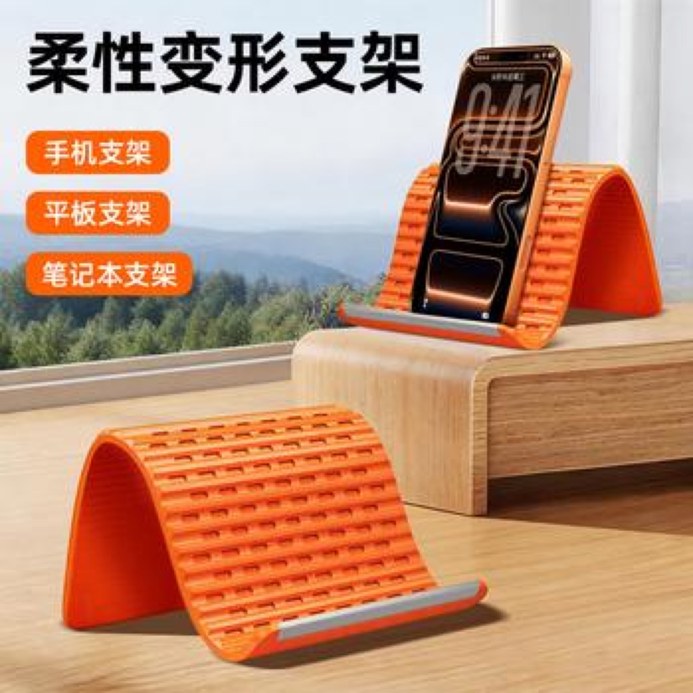

Teardown 02 / 17
柔性硅胶万能手机平板支架

用户
桌面办公、居家刷视频的数码使用者；同时拥有手机和平板，希望一个支架通用，不想买多款支架
场景
桌面场景下使用手机/平板刷视频、看资料，需要随时调整倾斜角度，交替使用不同尺寸设备
当前方案痛点
传统硬质支架角度档位固定，无法无级微调；手机支架和平板支架大多不通用，需要分开购买；零件多（转轴、卡扣）易损坏，收纳占地方
创意方案
采用整片可弯折回弹的硅胶材质，依靠材料自身形变形成支撑结构，无需转轴、卡扣等机械零件；通过改变弯折弧度，适配不同设备尺寸和摆放角度
核心价值
单一产品兼容多尺寸设备，减少重复购买成本；无复杂零件，耐用性高；形态可压扁，方便收纳携带
方案短板与边界
承重有限，超大尺寸厚重平板易倒伏；硅胶表面易沾灰、留指纹；高温环境下材质变软，支撑力下降
底层设计思想
利用材料本身的形变特性替代多零件机械结构，单一载体通过形态变化适配多种使用需求
同思想延伸案例
- 记忆棉枕头：靠材料形变适配不同头颈曲线，替代多档位调节结构
- 蛇形管台灯：金属软管任意弯折定型，替代多关节转轴支架
AI 机会迁移
单一AI产品不新增独立功能模块，通过参数/模式的动态切换，适配多种同类任务场景，减少用户切换工具的成本